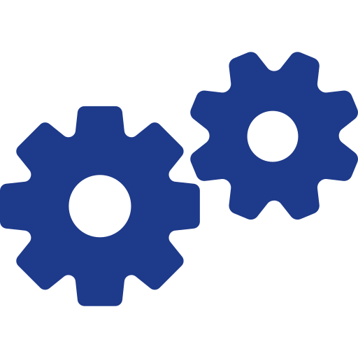

夜間や休日の対応ができない
夜間や休日の問い合わせに対応できず、せっかくの顧客を逃している…
よくある質問への回答をAIが100%自動化。
カスタマーサポートの負担を減らし、深夜の機会損失を防ぐことで、
顧客満足度とコンバージョン率を同時に高めます。
夜間や休日の問い合わせに対応できず、せっかくの顧客を逃している…
『パスワードを忘れた』など、同じ質問への回答ばかりで1日が終わる…
サポートスタッフの人手不足で、返信までに数時間待たせてしまう…
自社のホームページやマニュアルのURLを読み込ませるだけで、AIが自動で学習します。面倒なシナリオ作成は一切不要で、今日からすぐに稼働できます。
AIでは回答が難しい複雑な質問は、ワンクリックで人間のオペレーターへチャットを引き継ぎ。顧客にストレスを与えないハイブリッドな対応が可能です。

LINE、Slack、Teamsなど、お使いのコミュニケーションツールと連携可能。いつもの使い慣れた画面から、顧客のチャットへ簡単に返信ができます。
株式会社ECコマース 様
（ECサイト運営）
これまでは夜間や休日の問い合わせに対応できず、機会損失が発生していました。QuickBot.の導入後はAIが即座に自動回答してくれるため、ユーザーを待たせることなく夜間の購入完了率が劇的にアップしました。
スマートライフ株式会社 様
（WEBメディア運営）
毎日何件も届く「ログインできない」「解約方法を知りたい」といった同じ質問への対応に追われていました。それらをすべてAIチャットに任せることで、スタッフがより重要な個別サポートに集中できるようになりました。
合同会社ネクストステップ 様
（Webサービス運営）
過去に別のチャットボットを検討した際は、複雑な分岐設定（シナリオ作成）に挫折しました。QuickBot.は自社のヘルプページのURLを貼るだけで一瞬で賢いAIが完成したため、導入コストがほぼゼロで済みました。
「無料で14日間試してみる」ボタンからメールアドレスを入力するだけで、すぐにアカウントが発行されます。
管理画面に自社のホームページURLや、よくある質問（FAQ）のテキストをそのまま貼り付けます。
数分ほどでAIがデータを自動学習し、あなたの会社専用の賢いチャットボットが生成されます。
管理画面で発行される1行のコードを、自社サイトのHTMLにコピー＆ペーストするだけです。
サイトの右下にチャットが出現し、24時間自動応答がスタート。チャットの利用率はいつでも管理画面から確認できます。
自社のWEBサイトやマニュアルのURLを読み込ませるだけで、AIがその内容を学習し、ユーザーからの問い合わせに24時間365日、自動で即答するチャットボットを作成できます。
いいえ、一切不要です。管理画面に学習させたいURLを貼り付けるか、テキストをコピー＆ペーストするだけで設定が完了します。
いいえ、自動的に有料プランへ移行することはありません。トライアル終了後も継続してご利用いただく場合のみ、お支払い手続きを行っていただきます。
はい、可能です。LINE公式アカウント、Slack、Teamsなど主要なコミュニケーションツールと簡単に接続できます。いつものチャット画面から直接顧客の対応や通知の受け取りができるため、新しいツールの操作を覚える必要はありません。